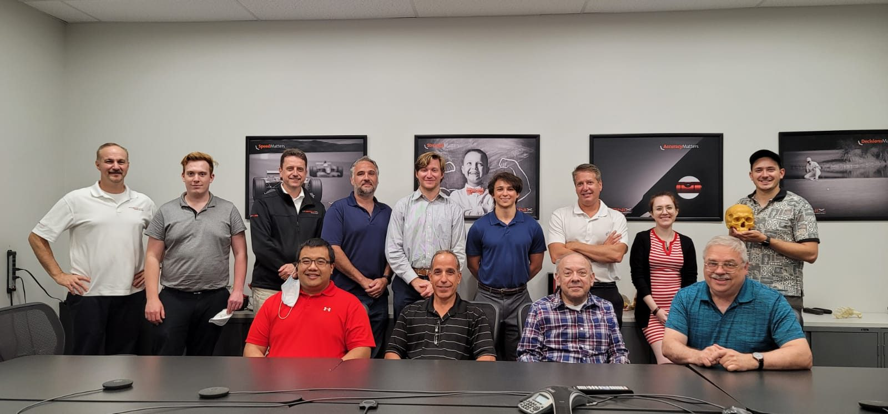

- 510(k)Submission testing supported
- Class IIUltrasonic surgical devices
- 1stSterile-field IFU at Bioventus
Overview
Misonix builds ultrasonic surgical systems that cut bone and remove tissue with high-frequency vibration instead of a spinning blade or saw. Across three internship terms in R&D, I worked in the lab, on design changes, and on regulatory documentation for two product lines.
The products
- BoneScalpel Access: an ultrasonic bone-cutting system for precise cuts in procedures such as spine surgery. The blade oscillates at ultrasonic frequency, which cuts rigid bone while sparing nearby soft tissue.
- SonaStar Elite: an ultrasonic surgical aspirator that breaks up and removes tissue.
Both are Class II medical devices, so every change runs through design control: documented requirements, verification testing, controlled drawings, and regulatory review before anything reaches production.
Verification and validation
- Ran verification and validation testing and data collection for Class II ultrasonic bone-cutting devices, including testing for a 510(k) submission to the FDA.
- Served as lab technician for BoneScalpel Access bench work and wrote a test report for every test I ran.
- Owned the organization of the product's test data, so results could be traced back to the test, the unit, and the setup.
The test methods I used included LabVIEW data acquisition, signal analyzers, thermal imaging, resonance testing, thermocouples, optical amplitude analysis, and operational testing.
Design changes
- Tube set for the BoneScalpel Access handpiece. I engineered a tube set that carries cooling fluid and aspiration to the handpiece inside the sterile field. I drafted its print and executed the engineering change order (ECO) to release it.
- Disposable packaging ECO. I drove an ECO for BoneScalpel Access disposable packaging. I released the updated prints and audited every vendor submission against the specification before it was accepted.
Regulatory documentation
I authored Bioventus's first sterile-field Instructions for Use (IFU). An IFU that goes into the sterile field has to survive sterilization and stay readable, so I worked with regulatory affairs, vendors, and a graphic designer to confirm compliance and autoclave compatibility, from the content through to the backer card artwork.
Project support
I ran daily supply-chain meetings and followed up with vendors to keep prototype and production deadlines on track.
Timeline
- Sep 2020 – Aug 2021: first term
- Dec 2021 – Jan 2022: winter term
- May – Aug 2022: summer term
The team
